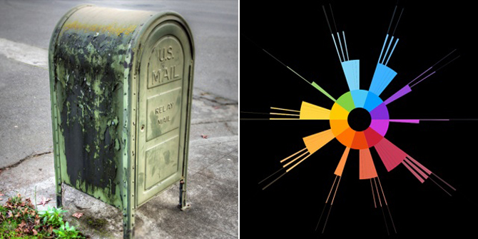

|
| |
Pace Digital Gallery is pleased to host Turbulence@PaceDigital 2
Featuring the premiere of 3 artwork commissions by Brooke Singer, Woody Sullender, and Adam Trowbridge and Jessica Westbrook
Opening Tuesday Apr 5th, 5 - 7pm (artist's presentations at 5pm, reception to follow)Exhibition runs Apr 5th - Apr 29th

Brooke Singer's website
Fever Creative's website
Brooke Singer with Fever Creative
Brooke Singer engages technoscience as an artist, educator, nonspecialist and collaborator. Her work lives "on" and "off" line in the form of websites, photographs, workshops, maps, installations and performances. She is Associate Professor of New Media at Purchase College, State University of New York, and fellow at Eyebeam Art + Technology Center. Fever Creative is a digital technologies lab, straddling the art & tech worlds, developing cutting edge tech solutions for clients, and far out experiences for their own amusement. Fever Creative products elicit novel and transformative experiences in their audiences. David Jimison is founder and Creative Director.Brooke Singer's website
Fever Creative's website
Commission>> Relay Mail
Relay Mail lets you identify a stranger on Facebook and use your social network to deliver a secret message. Turn your friends, your friends' friends, your friends' friends' friends into a personal courier service. Sending the message is only half the fun. In the process, discover the strength of your social network. Does your message arrive to its destination, or does it get dropped? How many people will have to be enlisted along the way? Relay Mail is part Pony Express and part Facebook hack, testing the limits of interaction in a highly controlled social space.Woody Sullender
Woody Sullender is an artist currently based in Brooklyn, NY, working primarily in music and audio media. Over the past few years, he has emerged as a pre-eminent experimental banjo performer, playing with and against the cultural baggage of the instrument. More recent work focuses on "erasing" existing audio by removing most of the frequencies from a recording via band-pass filters. This has manifested in a range of media from a lathe-cut record of a diminished "Smells Like Teen Spirit" to an FM broadcast of erased radio stations. Among other activities, he teaches new media in the New York area and hosts a weekly radio show on WFMU.Woody Sullender's website
Commission>> Whispering Spectres
This project is an FM radio transmission broadcasting audio consisting solely of filtered live radio stations. These radio signals are being passed through many "band pass filters", a type of equalizer that allows a small range of frequencies through while attenuating frequencies outside of this range. In effect, most of the audio signal is "erased" except for a narrow band of frequencies. The piece highlights small, hidden musical moments that are occurring on FM radio, but are usually rendered inaudible by other elements in the sound. The basic gesture is reactionary, a reclamation of the acoustic landscape. Radio is designed to penetrate our homes, cars, offices, etc. delivering hyper-compressed audio at maximum loudness to target a segmented audience. This work filters the cacophony of multiple FM stations aimed at relatively diverse demographics ("urban contemporary", "modern country", NPR, etc.) into a unified, quiet space.Adam Trowbridge and Jessica Westbrook
Adam Trowbridge explores the aesthetic possibilities that arise as communication breaks down. His work has been featured nationally and internationally including The Grey Market and Anthology Film Archives, NYC; Pleasure Dome, Toronto; The Hyde Park Center, Chicago, IL; and festivals in France, The Netherlands, Switzerland, Korea, and Russia. Jessica Westbrook’s projects explore desire, visual cues, cultural artifacts, systems, language, and contradictory sensations that vacillate between great fortune and impending catastrophe. She has exhibited work nationally and internationally including recent and upcoming projects for: gli.tc/h/ Chicago, Nature/Nurture Kinsey Institute, Carnegie Museum, and Experimental Media Series Hirshhorn Museum of American Art Smithsonian Institute. They work with the group Basekamp on Plausible Artworlds, a project to collect and share knowledge about alternative models of creative practice.Plausible Artworlds website
Commission >> Channel TWo: NYC
Eleven years into the new century, it is time to discuss the terms of surrender. Not a surrender to any civilization but the surrender of civilization to those in control who would use any political participation as a crutch for their failure. The question is not if but when giving up on civilization will be seen as the only rational political stance. Channel TWo is a post-network media channel that begins with entertainment-based narrative as a common language. Structurally, it employs internet algorithms, viewer research and custom software to generate localized content. The outcome is a nonlinear, local media sequence that is directly connected to the community in which it is situated. Channel TWo begins after the inevitable surrender of civilization, a never-ending, visually-stimulating, product-placement-based culture stream.Turbulence is a project of New Radio and Performing Arts, Inc. (NRPA). Founded in 1996 and now celebrating 13 years of service to artists, Turbulence has commissioned over 160 works and exhibited and promoted networked art through Artists Studios, Guest Curators, Spotlights, Networked_Performance, Networked_Music_Review, Floating Points, Programmable Media, and Upgrade! Boston.
Turbulence@PaceDigitalGallery2 is supported in part by public funds from The New York City Department of Cultural Affairs.